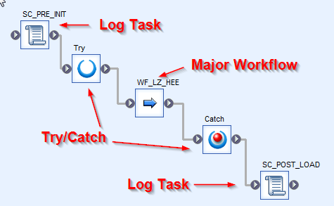
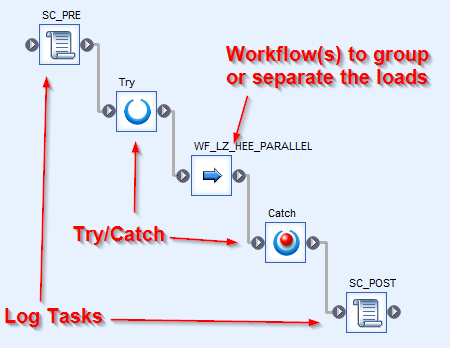
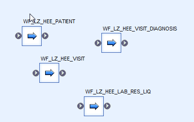
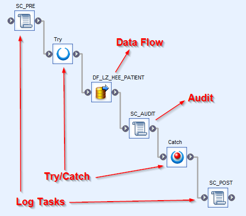
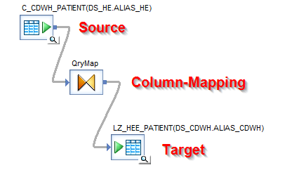
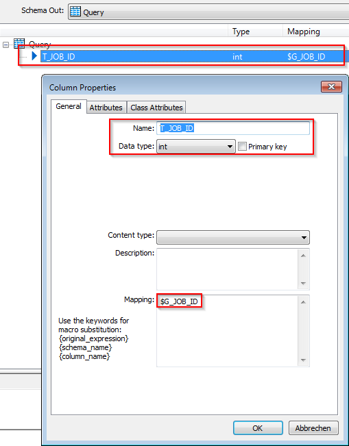
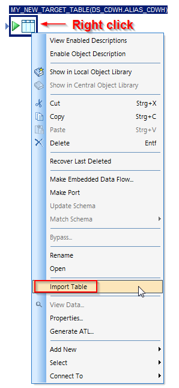
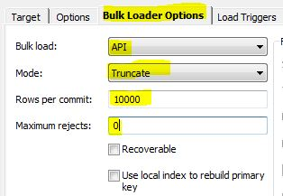

DataWarehouse : Workflows LZ Loads
Created by Fabian Franzeck, last modified by Richard Marti on Jan. 03, 2023
LZ Jobs
- There is a seperate job per source system, that contains the log tasks and one major workflow:
- Log Tasks: They call the same custom function CF_MD_JOB_CONTROL with parameter
('start') in the beginning of the workflow or ('end') at the end of the workflow. At start, the function gets a new Job ID, has some logic to prevent the same job to run in parallel multiple times and the functions sends emails to operation. At the end, the function collects the runtime information (start/end time, duration) and sends emails to operation - Try/Catch: This is to catch errors that happen between try and catch. In case of an error, the catch task calls the custom function CF_MD_JOB_CONTROL with parameter
('error') in order to update the job control table accordingly and to send an error-mail to operations - Major Workflow There is one major workflow, that usually contains one or more parallel workflows
LZ Major Workflow
- The major workflow contains one or more parallel workflows, to group or separate the loads from the source system:
- Log Tasks: They call the same custom function CF_MD_WF_CONTROL with parameter
('start') in the beginning of the workflow or ('end') at the end of the workflow. At start, the function inserts a new row in the log table. At the end, the function collects and updates the runtime information in the log table (start/end time, duration) - Try/Catch: This is to catch errors that happen between try and catch. In case of an error, the catch task calls the custom function CF_MD_WF_CONTROL with parameter
('error') in order to update the log table accordingly
LZ Parallel Workflow(s)
- The parallel workflows are the containers that have the load-workflows in it:
 - They have no logic like Try/Catch or logging tasks
- They are just containers to group data loads that can run in parallel, or to sequence depending data loads
LZ Load Workflows
- The load workflows contain the data flows, that loads the data from the source system to the CDWH landing zone (LZ):
- Log Tasks: They call the same custom function CF_MD_WF_CONTROL with parameter
('start') in the beginning of the workflow or ('end') at the end of the workflow. At start, the function inserts a new row in the log table. At the end, the function collects and updates the runtime information in the log table (start/end time, duration) - Try/Catch: This is to catch errors that happen between try and catch. In case of an error, the catch task calls the custom function CF_MD_WF_CONTROL with parameter
('error') in order to update the log table accordingly - Audit: This task calls the custom function CF_MD_AUDIT_TABLE that inserts the records in the flow statistics table. The audit table contains information like names of source- and target-tables, number of records and more
- Data Flow: Definition of the data load that includes the mapping of the columns:

Developing LZ Load Workflow
- Always Replicate an existing LZ Load Workflow as a first step to develop a new workflow. The only things to change in a second step are the object names and the data flow, all surroundings (log, audit, try/catch) are dynamic and can remain as they are
- Delete the data flow from the replicated workflow and create a new one
- Drag the new table from the datastore of the source system and drop it in the data flow as "Source"
- Insert a new template table as "Target"
- Insert a new Query Transform and connect the three objects: Source -> Query Transform -> Target (see picture above)
- Open the Query Transform and add a new column "T_JOB_ID" with datatype int
- Save the new column and assign the Variable $G_JOB_ID to it (in the Mapping-Tab)
- When you double click the column again, it should look like this:
 - Select all columns from the input schema and drag/drop them to the output schema
- Set the Primary Key of the target table
- Special Case: When there are input columns of datatype "long", we usually change the target datatype to varchar(5000) (which is the limit of HANA) and apply a function in the mapping for this column (Mapping-Tab): long_to_varchar(FIELD_NAME,1,5000). When the information is used and when it needs more than 5000 characters, it need a custom development (i.e. split the content up, load, concatinate back to original string in HANA)
- Save and execute the dataflow, in order to create the physical target table in the database
- Change the template table to a real table by importing the table:
 - Change the "Bulk load" field to "API" and "Truncate" in "BulkLoaderOptions":
 - Place the new workflow in the appropriate parallel workflow
{kind=link}
{kind=link}
{kind=link}
{kind=link}
{kind=link}
{kind=link}
{kind=link}
{kind=link}